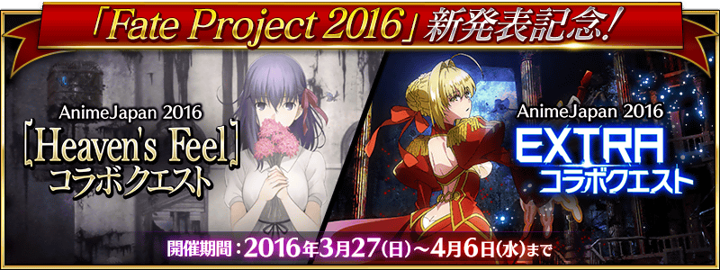
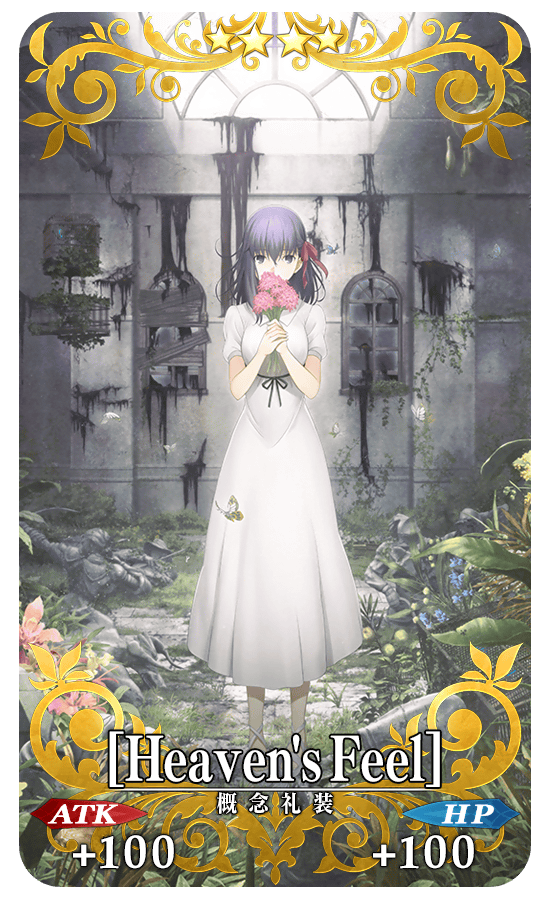
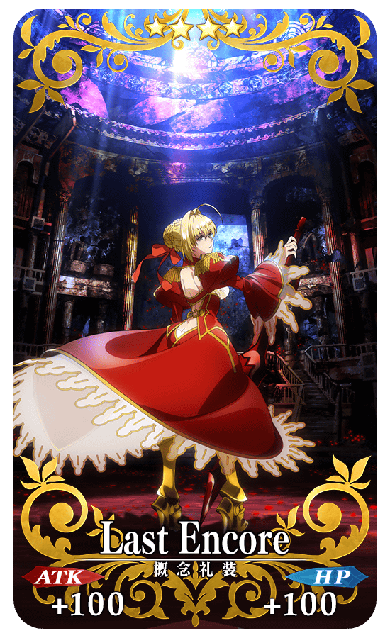

◆舉辦期間◆
2016年3月27日(日)18:00～4月6日(三)12:59
◆活動概要◆
紀念在「AnimeJapan 2016」進行的舞台活動「Fate Project 2016」的新發表，舉辦期間限定活動！
在「Fate Project 2016」中，發表劇場版最新情報的「Fate/stay night [Heaven’s Feel]」和發表動畫版的「Fate/EXTRA」。
2部作品的合作關卡在迦爾帝亞之門出現。
挑戰合作關卡，取得合作紀念限定概念禮裝吧！
･Fate/stay night [Heaven’s Feel] 官方網站
http://www.fate-sn.com/hf/
･Fate/EXTRA Last Encore 官方網站<
http://fate-extra-lastencore.com/
關連作 Fate/EXTELLA 官方網站<
http://fate-extella.jp/

| AJ 2016 EXTRAコラボクエスト | |||||
|---|---|---|---|---|---|
| 消耗AP | 推薦Lv. | 初次報酬 | 開放條件 | ||
| 5 | 10 | Last Encore | 3/27 17:00~4/6 12:59 | ||
| (1/1) | 職階傾向 | QP | Exp | 絆 | |
| 1,400 | 275 | 115 | |||
| AJ 2016 Heaven's Feelコラボクエスト | |||||
|---|---|---|---|---|---|
| 消耗AP | 推薦Lv. | 初次報酬 | 開放條件 | ||
| 5 | 10 | [Heaven's Feel] | 3/27 17:00~4/6 12:59 | ||
| (1/1) | 職階傾向 | QP | Exp | 絆 | |
| 1,400 | 275 | 115 | |||
◆コラボ記念限定概念礼装◆
|  |
★★★★SR |
|  |
★★★★SR |